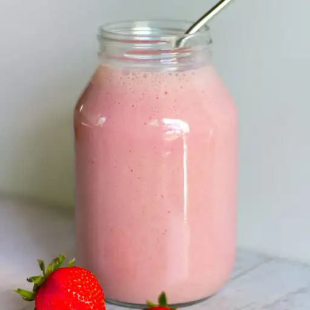

Fruit and Yogurt Smoothie

Description
This yogurt smoothie recipe is quick, easy, and delicious!
You can substitute the fruit for any other fruit or berries.
Using greek yogurt would also add more protein to the smoothie if you choose.
Ingredients
- 1 cup of strawberries
- 1 banana
- 1/2 cup yogurt
- 1/4 cup pineapple juice
- 1 1/2 teaspoons white sugar
- 1 teaspoon orange juice
- 1 teaspoon milk
Directions
- Combine strawberries, banana, yogurt, pineapple juice, sugar, orange juice, and milk in a blender; blend until smooth.
Homepage